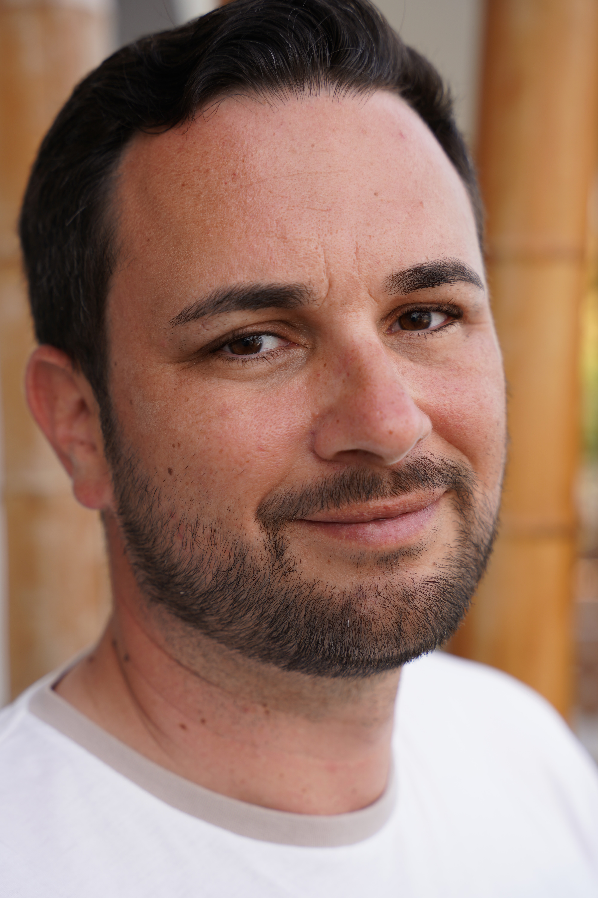

Markus Wiesecke

Ich bin ein fleißiger Programmierer mit Erfahrung in Python,HTML5,CSS und
Javascript
Schulbildung
- 2003 - 2005 Albrecht-Thaer-Schule, Celle
- 2000 -2003 Realschule Westercelle, Celle
Abschluss: Sekundärabschluss
- 1998-2000 Geschwister-Scholl-Realschule, Hannover
- 1997 - 1999 Orientierungsstufe Vorwerk, Celle
- 1994-1997 Grundschule Vorwerk, Celle
- 1993-1994 Grundschule Blumlage, Celle
- 1992-1993 Vorschule Waldweg, Celle
Praktische Erfahrung
Ich habe bereits an mehreren Projekten gearbeitet, die meine Fähigkeiten
in den oben genannten Programmiersprachen unter Beweis gestellt haben.
Projekte
Hier kommen noch meine tollen Projekte hin
Meine Fähigkeiten
- Python: ⭐⭐⭐
- HTML/CSS: ⭐⭐⭐⭐
- Javascript ⭐⭐⭐
Meine Hobbys:
- 💻 Programmieren
- 🚲 Fahrrad fahren
- 🗺️ Reisen
- 📷 Fotografieren
Interesse geweckt?
Dann kontaktiere mich gerne